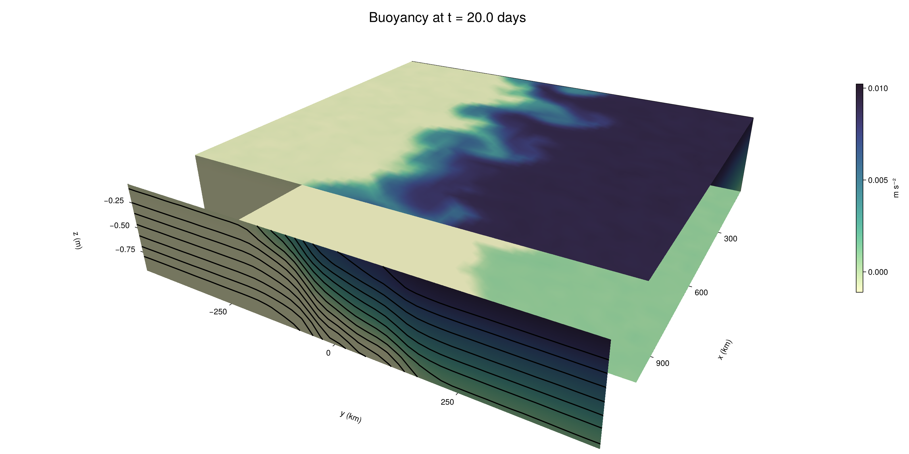

Baroclinic adjustment
In this example, we simulate the evolution and equilibration of a baroclinically unstable front.
Install dependencies
First let's make sure we have all required packages installed.
using Pkg
pkg"add Oceananigans, CairoMakie"using Oceananigans
using Oceananigans.UnitsGrid
We use a three-dimensional channel that is periodic in the x direction:
Lx = 1000kilometers # east-west extent [m]
Ly = 1000kilometers # north-south extent [m]
Lz = 1kilometers # depth [m]
grid = RectilinearGrid(size = (48, 48, 8),
x = (0, Lx),
y = (-Ly/2, Ly/2),
z = (-Lz, 0),
topology = (Periodic, Bounded, Bounded))48×48×8 RectilinearGrid{Float64, Periodic, Bounded, Bounded} on CPU with 3×3×3 halo
├── Periodic x ∈ [0.0, 1.0e6) regularly spaced with Δx=20833.3
├── Bounded y ∈ [-500000.0, 500000.0] regularly spaced with Δy=20833.3
└── Bounded z ∈ [-1000.0, 0.0] regularly spaced with Δz=125.0Model
We built a HydrostaticFreeSurfaceModel with an ImplicitFreeSurface solver. Regarding Coriolis, we use a beta-plane centered at 45° South.
model = HydrostaticFreeSurfaceModel(; grid,
coriolis = BetaPlane(latitude = -45),
buoyancy = BuoyancyTracer(),
tracers = :b,
momentum_advection = WENO(),
tracer_advection = WENO())HydrostaticFreeSurfaceModel{CPU, RectilinearGrid}(time = 0 seconds, iteration = 0)
├── grid: 48×48×8 RectilinearGrid{Float64, Periodic, Bounded, Bounded} on CPU with 3×3×3 halo
├── timestepper: QuasiAdamsBashforth2TimeStepper
├── tracers: b
├── closure: Nothing
├── buoyancy: BuoyancyTracer with ĝ = NegativeZDirection()
├── free surface: ImplicitFreeSurface with gravitational acceleration 9.80665 m s⁻²
│ └── solver: FFTImplicitFreeSurfaceSolver
├── advection scheme:
│ ├── momentum: WENO reconstruction order 5
│ └── b: WENO reconstruction order 5
└── coriolis: BetaPlane{Float64}We start our simulation from rest with a baroclinically unstable buoyancy distribution. We use ramp(y, Δy), defined below, to specify a front with width Δy and horizontal buoyancy gradient M². We impose the front on top of a vertical buoyancy gradient N² and a bit of noise.
"""
ramp(y, Δy)
Linear ramp from 0 to 1 between -Δy/2 and +Δy/2.
For example:
```
y < -Δy/2 => ramp = 0
-Δy/2 < y < -Δy/2 => ramp = y / Δy
y > Δy/2 => ramp = 1
```
"""
ramp(y, Δy) = min(max(0, y/Δy + 1/2), 1)
N² = 1e-5 # [s⁻²] buoyancy frequency / stratification
M² = 1e-7 # [s⁻²] horizontal buoyancy gradient
Δy = 100kilometers # width of the region of the front
Δb = Δy * M² # buoyancy jump associated with the front
ϵb = 1e-2 * Δb # noise amplitude
bᵢ(x, y, z) = N² * z + Δb * ramp(y, Δy) + ϵb * randn()
set!(model, b=bᵢ)Let's visualize the initial buoyancy distribution.
using CairoMakie
# Build coordinates with units of kilometers
x, y, z = 1e-3 .* nodes(grid, (Center(), Center(), Center()))
b = model.tracers.b
fig, ax, hm = heatmap(y, z, interior(b)[1, :, :],
colormap=:deep,
axis = (xlabel = "y [km]",
ylabel = "z [km]",
title = "b(x=0, y, z, t=0)",
titlesize = 24))
Colorbar(fig[1, 2], hm, label = "[m s⁻²]")
fig
Simulation
Now let's build a Simulation.
simulation = Simulation(model, Δt=20minutes, stop_time=20days)Simulation of HydrostaticFreeSurfaceModel{CPU, RectilinearGrid}(time = 0 seconds, iteration = 0)
├── Next time step: 20 minutes
├── Elapsed wall time: 0 seconds
├── Wall time per iteration: NaN days
├── Stop time: 20 days
├── Stop iteration : Inf
├── Wall time limit: Inf
├── Callbacks: OrderedDict with 4 entries:
│ ├── stop_time_exceeded => Callback of stop_time_exceeded on IterationInterval(1)
│ ├── stop_iteration_exceeded => Callback of stop_iteration_exceeded on IterationInterval(1)
│ ├── wall_time_limit_exceeded => Callback of wall_time_limit_exceeded on IterationInterval(1)
│ └── nan_checker => Callback of NaNChecker for u on IterationInterval(100)
├── Output writers: OrderedDict with no entries
└── Diagnostics: OrderedDict with no entriesWe add a TimeStepWizard callback to adapt the simulation's time-step,
conjure_time_step_wizard!(simulation, IterationInterval(20), cfl=0.2, max_Δt=20minutes)Also, we add a callback to print a message about how the simulation is going,
using Printf
wall_clock = Ref(time_ns())
function print_progress(sim)
u, v, w = model.velocities
progress = 100 * (time(sim) / sim.stop_time)
elapsed = (time_ns() - wall_clock[]) / 1e9
@printf("[%05.2f%%] i: %d, t: %s, wall time: %s, max(u): (%6.3e, %6.3e, %6.3e) m/s, next Δt: %s\n",
progress, iteration(sim), prettytime(sim), prettytime(elapsed),
maximum(abs, u), maximum(abs, v), maximum(abs, w), prettytime(sim.Δt))
wall_clock[] = time_ns()
return nothing
end
add_callback!(simulation, print_progress, IterationInterval(100))Diagnostics/Output
Here, we save the buoyancy, $b$, at the edges of our domain as well as the zonal ($x$) average of buoyancy.
u, v, w = model.velocities
ζ = ∂x(v) - ∂y(u)
B = Average(b, dims=1)
U = Average(u, dims=1)
V = Average(v, dims=1)
filename = "baroclinic_adjustment"
save_fields_interval = 0.5day
slicers = (east = (grid.Nx, :, :),
north = (:, grid.Ny, :),
bottom = (:, :, 1),
top = (:, :, grid.Nz))
for side in keys(slicers)
indices = slicers[side]
simulation.output_writers[side] = JLD2OutputWriter(model, (; b, ζ);
filename = filename * "_$(side)_slice",
schedule = TimeInterval(save_fields_interval),
overwrite_existing = true,
indices)
end
simulation.output_writers[:zonal] = JLD2OutputWriter(model, (; b=B, u=U, v=V);
filename = filename * "_zonal_average",
schedule = TimeInterval(save_fields_interval),
overwrite_existing = true)JLD2OutputWriter scheduled on TimeInterval(12 hours):
├── filepath: ./baroclinic_adjustment_zonal_average.jld2
├── 3 outputs: (b, u, v)
├── array type: Array{Float64}
├── including: [:grid, :coriolis, :buoyancy, :closure]
├── file_splitting: NoFileSplitting
└── file size: 29.3 KiBNow we're ready to run.
@info "Running the simulation..."
run!(simulation)
@info "Simulation completed in " * prettytime(simulation.run_wall_time)[ Info: Running the simulation...
[ Info: Initializing simulation...
[00.00%] i: 0, t: 0 seconds, wall time: 13.874 seconds, max(u): (0.000e+00, 0.000e+00, 0.000e+00) m/s, next Δt: 20 minutes
[ Info: ... simulation initialization complete (13.585 seconds)
[ Info: Executing initial time step...
[ Info: ... initial time step complete (22.163 seconds).
[06.94%] i: 100, t: 1.389 days, wall time: 38.562 seconds, max(u): (1.275e-01, 1.214e-01, 1.462e-03) m/s, next Δt: 20 minutes
[13.89%] i: 200, t: 2.778 days, wall time: 4.421 seconds, max(u): (2.174e-01, 2.021e-01, 1.855e-03) m/s, next Δt: 20 minutes
[20.83%] i: 300, t: 4.167 days, wall time: 4.377 seconds, max(u): (3.018e-01, 2.781e-01, 2.081e-03) m/s, next Δt: 20 minutes
[27.78%] i: 400, t: 5.556 days, wall time: 4.136 seconds, max(u): (3.709e-01, 3.925e-01, 2.241e-03) m/s, next Δt: 20 minutes
[34.72%] i: 500, t: 6.944 days, wall time: 4.411 seconds, max(u): (4.761e-01, 5.921e-01, 2.408e-03) m/s, next Δt: 20 minutes
[41.67%] i: 600, t: 8.333 days, wall time: 4.531 seconds, max(u): (6.371e-01, 9.003e-01, 2.878e-03) m/s, next Δt: 20 minutes
[48.61%] i: 700, t: 9.722 days, wall time: 4.209 seconds, max(u): (1.109e+00, 1.160e+00, 4.058e-03) m/s, next Δt: 20 minutes
[55.56%] i: 800, t: 11.111 days, wall time: 4.229 seconds, max(u): (1.332e+00, 1.039e+00, 4.661e-03) m/s, next Δt: 20 minutes
[62.50%] i: 900, t: 12.500 days, wall time: 4.221 seconds, max(u): (1.282e+00, 9.309e-01, 4.034e-03) m/s, next Δt: 20 minutes
[69.44%] i: 1000, t: 13.889 days, wall time: 4.195 seconds, max(u): (1.186e+00, 8.452e-01, 3.131e-03) m/s, next Δt: 20 minutes
[76.39%] i: 1100, t: 15.278 days, wall time: 4.198 seconds, max(u): (1.150e+00, 7.965e-01, 2.596e-03) m/s, next Δt: 20 minutes
[83.33%] i: 1200, t: 16.667 days, wall time: 4.214 seconds, max(u): (1.277e+00, 9.890e-01, 2.266e-03) m/s, next Δt: 20 minutes
[90.28%] i: 1300, t: 18.056 days, wall time: 4.358 seconds, max(u): (1.254e+00, 1.095e+00, 2.526e-03) m/s, next Δt: 20 minutes
[97.22%] i: 1400, t: 19.444 days, wall time: 4.323 seconds, max(u): (1.122e+00, 1.125e+00, 2.439e-03) m/s, next Δt: 20 minutes
[ Info: Simulation is stopping after running for 1.674 minutes.
[ Info: Simulation time 20 days equals or exceeds stop time 20 days.
[ Info: Simulation completed in 1.675 minutes
Visualization
All that's left is to make a pretty movie. Actually, we make two visualizations here. First, we illustrate how to make a 3D visualization with Makie's Axis3 and Makie.surface. Then we make a movie in 2D. We use CairoMakie in this example, but note that using GLMakie is more convenient on a system with OpenGL, as figures will be displayed on the screen.
using CairoMakieThree-dimensional visualization
We load the saved buoyancy output on the top, bottom, north, and east surface as FieldTimeSerieses.
filename = "baroclinic_adjustment"
sides = keys(slicers)
slice_filenames = NamedTuple(side => filename * "_$(side)_slice.jld2" for side in sides)
b_timeserieses = (east = FieldTimeSeries(slice_filenames.east, "b"),
north = FieldTimeSeries(slice_filenames.north, "b"),
bottom = FieldTimeSeries(slice_filenames.bottom, "b"),
top = FieldTimeSeries(slice_filenames.top, "b"))
B_timeseries = FieldTimeSeries(filename * "_zonal_average.jld2", "b")
times = B_timeseries.times
grid = B_timeseries.grid48×48×8 RectilinearGrid{Float64, Periodic, Bounded, Bounded} on CPU with 3×3×3 halo
├── Periodic x ∈ [0.0, 1.0e6) regularly spaced with Δx=20833.3
├── Bounded y ∈ [-500000.0, 500000.0] regularly spaced with Δy=20833.3
└── Bounded z ∈ [-1000.0, 0.0] regularly spaced with Δz=125.0We build the coordinates. We rescale horizontal coordinates to kilometers.
xb, yb, zb = nodes(b_timeserieses.east)
xb = xb ./ 1e3 # convert m -> km
yb = yb ./ 1e3 # convert m -> km
Nx, Ny, Nz = size(grid)
x_xz = repeat(x, 1, Nz)
y_xz_north = y[end] * ones(Nx, Nz)
z_xz = repeat(reshape(z, 1, Nz), Nx, 1)
x_yz_east = x[end] * ones(Ny, Nz)
y_yz = repeat(y, 1, Nz)
z_yz = repeat(reshape(z, 1, Nz), grid.Ny, 1)
x_xy = x
y_xy = y
z_xy_top = z[end] * ones(grid.Nx, grid.Ny)
z_xy_bottom = z[1] * ones(grid.Nx, grid.Ny)Then we create a 3D axis. We use zonal_slice_displacement to control where the plot of the instantaneous zonal average flow is located.
fig = Figure(size = (1600, 800))
zonal_slice_displacement = 1.2
ax = Axis3(fig[2, 1],
aspect=(1, 1, 1/5),
xlabel = "x (km)",
ylabel = "y (km)",
zlabel = "z (m)",
xlabeloffset = 100,
ylabeloffset = 100,
zlabeloffset = 100,
limits = ((x[1], zonal_slice_displacement * x[end]), (y[1], y[end]), (z[1], z[end])),
elevation = 0.45,
azimuth = 6.8,
xspinesvisible = false,
zgridvisible = false,
protrusions = 40,
perspectiveness = 0.7)Axis3()We use data from the final savepoint for the 3D plot. Note that this plot can easily be animated by using Makie's Observable. To dive into Observables, check out Makie.jl's Documentation.
n = length(times)41Now let's make a 3D plot of the buoyancy and in front of it we'll use the zonally-averaged output to plot the instantaneous zonal-average of the buoyancy.
b_slices = (east = interior(b_timeserieses.east[n], 1, :, :),
north = interior(b_timeserieses.north[n], :, 1, :),
bottom = interior(b_timeserieses.bottom[n], :, :, 1),
top = interior(b_timeserieses.top[n], :, :, 1))
# Zonally-averaged buoyancy
B = interior(B_timeseries[n], 1, :, :)
clims = 1.1 .* extrema(b_timeserieses.top[n][:])
kwargs = (colorrange=clims, colormap=:deep)
surface!(ax, x_yz_east, y_yz, z_yz; color = b_slices.east, kwargs...)
surface!(ax, x_xz, y_xz_north, z_xz; color = b_slices.north, kwargs...)
surface!(ax, x_xy, y_xy, z_xy_bottom ; color = b_slices.bottom, kwargs...)
surface!(ax, x_xy, y_xy, z_xy_top; color = b_slices.top, kwargs...)
sf = surface!(ax, zonal_slice_displacement .* x_yz_east, y_yz, z_yz; color = B, kwargs...)
contour!(ax, y, z, B; transformation = (:yz, zonal_slice_displacement * x[end]),
levels = 15, linewidth = 2, color = :black)
Colorbar(fig[2, 2], sf, label = "m s⁻²", height = Relative(0.4), tellheight=false)
title = "Buoyancy at t = " * string(round(times[n] / day, digits=1)) * " days"
fig[1, 1:2] = Label(fig, title; fontsize = 24, tellwidth = false, padding = (0, 0, -120, 0))
rowgap!(fig.layout, 1, Relative(-0.2))
colgap!(fig.layout, 1, Relative(-0.1))
save("baroclinic_adjustment_3d.png", fig)
Two-dimensional movie
We make a 2D movie that shows buoyancy $b$ and vertical vorticity $ζ$ at the surface, as well as the zonally-averaged zonal and meridional velocities $U$ and $V$ in the $(y, z)$ plane. First we load the FieldTimeSeries and extract the additional coordinates we'll need for plotting
ζ_timeseries = FieldTimeSeries(slice_filenames.top, "ζ")
U_timeseries = FieldTimeSeries(filename * "_zonal_average.jld2", "u")
B_timeseries = FieldTimeSeries(filename * "_zonal_average.jld2", "b")
V_timeseries = FieldTimeSeries(filename * "_zonal_average.jld2", "v")
xζ, yζ, zζ = nodes(ζ_timeseries)
yv = ynodes(V_timeseries)
xζ = xζ ./ 1e3 # convert m -> km
yζ = yζ ./ 1e3 # convert m -> km
yv = yv ./ 1e3 # convert m -> km49-element Vector{Float64}:
-500.0
-479.1666666666667
-458.3333333333333
-437.5
-416.6666666666667
-395.8333333333333
-375.0
-354.1666666666667
-333.3333333333333
-312.5
-291.6666666666667
-270.8333333333333
-250.0
-229.16666666666666
-208.33333333333334
-187.5
-166.66666666666666
-145.83333333333334
-125.0
-104.16666666666667
-83.33333333333333
-62.5
-41.666666666666664
-20.833333333333332
0.0
20.833333333333332
41.666666666666664
62.5
83.33333333333333
104.16666666666667
125.0
145.83333333333334
166.66666666666666
187.5
208.33333333333334
229.16666666666666
250.0
270.8333333333333
291.6666666666667
312.5
333.3333333333333
354.1666666666667
375.0
395.8333333333333
416.6666666666667
437.5
458.3333333333333
479.1666666666667
500.0Next, we set up a plot with 4 panels. The top panels are large and square, while the bottom panels get a reduced aspect ratio through rowsize!.
set_theme!(Theme(fontsize=24))
fig = Figure(size=(1800, 1000))
axb = Axis(fig[1, 2], xlabel="x (km)", ylabel="y (km)", aspect=1)
axζ = Axis(fig[1, 3], xlabel="x (km)", ylabel="y (km)", aspect=1, yaxisposition=:right)
axu = Axis(fig[2, 2], xlabel="y (km)", ylabel="z (m)")
axv = Axis(fig[2, 3], xlabel="y (km)", ylabel="z (m)", yaxisposition=:right)
rowsize!(fig.layout, 2, Relative(0.3))To prepare a plot for animation, we index the timeseries with an Observable,
n = Observable(1)
b_top = @lift interior(b_timeserieses.top[$n], :, :, 1)
ζ_top = @lift interior(ζ_timeseries[$n], :, :, 1)
U = @lift interior(U_timeseries[$n], 1, :, :)
V = @lift interior(V_timeseries[$n], 1, :, :)
B = @lift interior(B_timeseries[$n], 1, :, :)Observable([-0.009372219388728743 -0.008096914415819246 -0.006865894379216482 -0.005632819045068567 -0.004362685674228556 -0.00312159355895651 -0.0018857652425389958 -0.0006462692075602719; -0.009383136579725547 -0.008136157573239133 -0.006859063456554344 -0.00562940447607449 -0.004377199326364797 -0.0031249843874468883 -0.0018649513911838582 -0.0006078270655895576; -0.009372618063821869 -0.008123059587131106 -0.0068676542280802855 -0.005606542549723916 -0.00435543387966371 -0.0031405192212764633 -0.001895909227375689 -0.0006283665910078452; -0.009375777898963168 -0.008139664884410681 -0.006856535665327735 -0.005627245141943705 -0.0044114732833620135 -0.0031222347527730715 -0.0018696695052025653 -0.0006381754764377364; -0.009395990119538315 -0.008120203952864008 -0.006869412213129866 -0.00564606131307676 -0.004372736478286221 -0.003124784330343281 -0.0018633586219382265 -0.0006562765051583193; -0.009391239068698555 -0.008160799180976201 -0.006852532724088715 -0.005615152452499893 -0.004380641867694663 -0.0031233786913663565 -0.0018632555234466789 -0.0006207350042849741; -0.00937537971955941 -0.008143936086003034 -0.006844801130499927 -0.005625871702939096 -0.004374854848119861 -0.0031095778487783567 -0.0018718944483312606 -0.0006316017666231994; -0.009397271459281093 -0.00813132168920225 -0.006872355035687248 -0.005634063529227608 -0.004391845157405875 -0.0031235833524368446 -0.0018677166561378645 -0.0006543735544036208; -0.009352269268156953 -0.008109919852950677 -0.006873029380984475 -0.005630793613681573 -0.004371528893717157 -0.0031351370623344302 -0.0019050651632134868 -0.0006275783054516816; -0.009371206393625922 -0.00816246293704495 -0.006891603417500787 -0.00562163795198329 -0.004379737926003713 -0.003113717695436235 -0.0018652950159596413 -0.0006230545282058093; -0.009382777141034002 -0.008104621125505444 -0.006868964031754315 -0.005641469859272976 -0.004380288997642205 -0.0031219667021562293 -0.0018906728265235297 -0.0006228317692220318; -0.00935818930253647 -0.008144113359049607 -0.006898540785203972 -0.00561696356054234 -0.0043784174020289595 -0.003146514789361985 -0.0018895872590509464 -0.0005884060025226136; -0.009360671026469543 -0.008137126449736113 -0.006870101127740773 -0.005642634929412226 -0.004350088881103852 -0.0031300221293287882 -0.0018744314639162329 -0.0006073136113115291; -0.009378916341325452 -0.00812260254665178 -0.006875028096752678 -0.005631256198600995 -0.004371294120192951 -0.0031209886242260163 -0.0018677889114615664 -0.0006357759123171852; -0.009380624419895725 -0.008102874041134472 -0.006889111335075014 -0.005610377902758289 -0.004371373118316277 -0.0031404312072606604 -0.0018455292580799346 -0.0006131940951003787; -0.009372176446519623 -0.008128846403415511 -0.006885600001179221 -0.005604458180414662 -0.004371303989003493 -0.0031302631647436192 -0.0018908764086699563 -0.0006158262501351382; -0.009367996953686905 -0.008133223342321323 -0.0068843530169847835 -0.005625066046012398 -0.004387497457622627 -0.003112037737952376 -0.0018805006926724082 -0.0006238336320555237; -0.009379380047736545 -0.008136239417891199 -0.006902041508947433 -0.0055992646640434145 -0.004381635053921191 -0.0031152655823103643 -0.0018751250642864504 -0.0006130709811110574; -0.009359187299493043 -0.008113063647088631 -0.006876843268913792 -0.005593090165064547 -0.0043737658659870685 -0.0031238913511103298 -0.0018705492929108195 -0.0006353649818253773; -0.009415003961693461 -0.00810702580466069 -0.006873529870278609 -0.005627185084886838 -0.004379461714945299 -0.0031257581586714585 -0.0018626796335356414 -0.0006323360049630423; -0.009365588269421384 -0.008130428712233614 -0.006908275963813302 -0.005633647609889739 -0.004344512884883935 -0.003105371767444211 -0.0018739830637063651 -0.0006346043653707712; -0.009386533347271513 -0.008115857283822402 -0.006877351338480864 -0.005615070026344377 -0.0043800533187910405 -0.0031324357529111725 -0.0018659360532114026 -0.0006674515600867768; -0.0075168448689128566 -0.00623135418148625 -0.005023659863050042 -0.003744982038569669 -0.0025167727651130207 -0.0012330857046291529 -1.2549927744140603e-5 0.0012410835342962646; -0.005439957551796032 -0.00415215796070069 -0.002920852855503482 -0.0016908864109966934 -0.0003913830339982035 0.0008492162999223562 0.002093644097998614 0.003313049301354416; -0.0033523424031587506 -0.002092893795738627 -0.0008457865109854027 0.0004069233380660487 0.0016588493936062724 0.002921566307807516 0.004200257830535907 0.005412650209193443; -0.0012780895506668375 1.00973128388394e-6 0.0012635085960307957 0.0024989942527031375 0.003750948795231201 0.004998928986122457 0.006245233989774185 0.007517796742099234; 0.0006201952373649399 0.0018773593522502178 0.0031380757320471214 0.004388107698721806 0.005639425711960811 0.006884146802377773 0.008114196434123344 0.009384345284284145; 0.0006255626377401923 0.0018638608444898625 0.0031401381439238028 0.004385754437155975 0.005616875038383752 0.006874024811478029 0.00813051283717005 0.009375807692802106; 0.0006320490016622945 0.001896046011141841 0.003129413974724987 0.00437168530435746 0.005623010640510716 0.006890424166277214 0.008140197347712609 0.009355683584129597; 0.0006354662849376236 0.0018959687443933098 0.003107899491724877 0.004403453214907098 0.005626462578798372 0.006900408590210923 0.008102856282443283 0.00939736136805939; 0.0006125988309019614 0.0018722787174677308 0.003109130319036729 0.00438930349616724 0.00562795839881874 0.006862607127810525 0.008141142092587931 0.009373696767015485; 0.0006029094382630372 0.0018939211389213983 0.0031209038503614886 0.004391021558970619 0.005615093419326241 0.006857170911669145 0.008131646206331425 0.009367751440236516; 0.0006277976818309407 0.001887090474865619 0.003118589648834373 0.004393903048181511 0.005633977177098702 0.006880849487203486 0.008127810924972998 0.009362454912437026; 0.0005983629366628599 0.0019160699719542134 0.003164328541734554 0.004354123406522816 0.005632327605888683 0.006856089350249952 0.008140957343443979 0.00935898058145413; 0.0006212528066940848 0.0018774662545137108 0.0031243812992087783 0.004360482378290117 0.0056243253017051005 0.006885815355415173 0.008133497267957679 0.009375029898490822; 0.0006421707456412592 0.0018763971341614757 0.0031027637342549118 0.004384688988150731 0.005625422468999137 0.006862389489708322 0.00811680724348335 0.009392818774571373; 0.0006308592354783465 0.0018509960092251802 0.003140718929059823 0.00437092046052859 0.005613966855188973 0.006883529278485949 0.008107237333713067 0.009373246095583319; 0.000628705413759439 0.0018745566725643596 0.003101536072850184 0.004365744219236675 0.005617649602329217 0.0069005885466255175 0.008107270741599485 0.009364658855789115; 0.0006080832472786184 0.0018843351747209356 0.0031274277689234543 0.004394641408687428 0.005626343973141781 0.006868089804399535 0.008106009593708588 0.009378857289211687; 0.0006270295266401336 0.0018973854882828496 0.003098576164737042 0.004388434682354226 0.005638434385665049 0.00687521778896779 0.00812978233970667 0.009366008452035708; 0.00063086414045778 0.0018758901303435657 0.003126555865243399 0.004376413109773754 0.0056260754432760724 0.006875959137556405 0.008110808647288893 0.009350450974428876; 0.0005861064401949843 0.0018788571528173693 0.00312423533781922 0.004371360653631562 0.005640864451431982 0.006890704460829271 0.008122897639718624 0.00938363604753503; 0.000635279360080802 0.0018297724795250422 0.003131152138369402 0.004391793484439347 0.005644295257529782 0.006857374082938135 0.008135672984520136 0.00937194857386865; 0.0006223417086949415 0.0018669639873683038 0.003119800490172657 0.004361507754391008 0.0056331593620312015 0.006874965384559321 0.008142157321930955 0.009374095863492313; 0.000619780786497793 0.0018928231828237452 0.003134753253261895 0.004357518139934358 0.005621379019514992 0.006876732531146456 0.008128814751880311 0.009386270206349636; 0.0006315878667296286 0.0018940648210889319 0.0031067531901118168 0.004380534036796318 0.0056132989172251345 0.00689759164098278 0.008104888449725567 0.009390740218460198; 0.0006446906216587703 0.0018835368526467554 0.003113791751221636 0.004385297327391868 0.005635270372854811 0.006882022023275289 0.008127726996035537 0.009386362584991816; 0.0006185246867691521 0.0018847516645461426 0.003149246263144024 0.0043730179195813216 0.0056206632040727246 0.00687920022589688 0.008125424769698074 0.009370243484678978])
and then build our plot:
hm = heatmap!(axb, xb, yb, b_top, colorrange=(0, Δb), colormap=:thermal)
Colorbar(fig[1, 1], hm, flipaxis=false, label="Surface b(x, y) (m s⁻²)")
hm = heatmap!(axζ, xζ, yζ, ζ_top, colorrange=(-5e-5, 5e-5), colormap=:balance)
Colorbar(fig[1, 4], hm, label="Surface ζ(x, y) (s⁻¹)")
hm = heatmap!(axu, yb, zb, U; colorrange=(-5e-1, 5e-1), colormap=:balance)
Colorbar(fig[2, 1], hm, flipaxis=false, label="Zonally-averaged U(y, z) (m s⁻¹)")
contour!(axu, yb, zb, B; levels=15, color=:black)
hm = heatmap!(axv, yv, zb, V; colorrange=(-1e-1, 1e-1), colormap=:balance)
Colorbar(fig[2, 4], hm, label="Zonally-averaged V(y, z) (m s⁻¹)")
contour!(axv, yb, zb, B; levels=15, color=:black)Finally, we're ready to record the movie.
frames = 1:length(times)
record(fig, filename * ".mp4", frames, framerate=8) do i
n[] = i
endThis page was generated using Literate.jl.